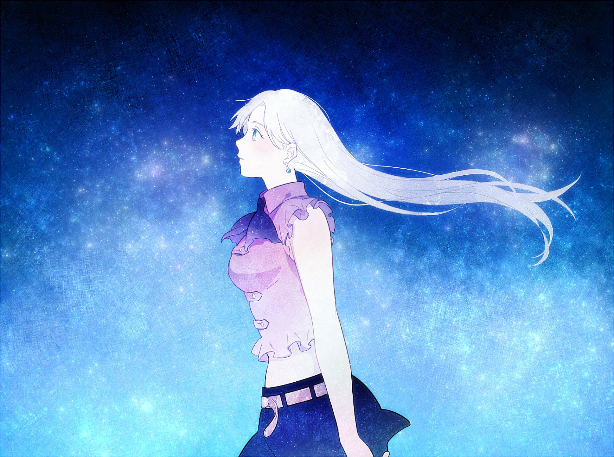

Elizabeth
Elizabeth is the third princess of the Kingdom of Liones. She is kind-hearted, compassionate, and possesses a strong sense of justice. Elizabeth has a mysterious past, later revealed to be the reincarnation of the Goddess Elizabeth, who is Meliodas' true love. She has powerful healing abilities and the ability to awaken latent powers in others. Throughout the series, Elizabeth's relationship with Meliodas is a central plot point, as they share a deep and timeless love that spans multiple lifetimes.